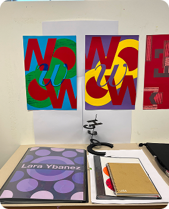
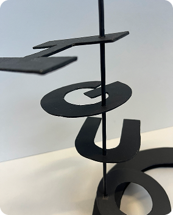

College Work
 Final presentation and piece for module 1.
School Projects
Negative space drawing of a charger.
Clay head with a butterfly on the back.
Sketch of a shell.
I am a first year Graphic Design student. I love my course and I’d say Graphic Design has become one of my passions, but other hobbies of mine include exercising, photography & online shopping hehe. I am still trying to find my style, so these were done for either college or school.
Final presentation and piece for module 1.
Negative space drawing of a charger.
Clay head with a butterfly on the back.
Sketch of a shell.